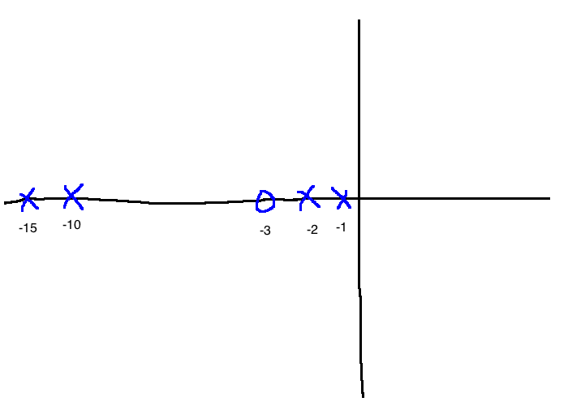

PID Control
Back to se380
7.1 Classical PID

\[\begin{align}
C(s) &= \frac{U(s)}{E(s)}\\
&= K_p + \frac{K_i}{s} + K_ds\\
&= \frac{K_ds^2 + K_ps + K_i}{s}\\
\\
\text{Standard form:}\\
&= K_p\left(1 + \frac{1}{T_is}+T_ds\right)\\
\text{Where:}\\
T_i &= \text{integral time constant}\\
T_d &= \text{derivative time constant}\\
\\
u(t)&=K_pe(t) + K_i \int_0^t e(\tau)d\tau + K_d \frac{de}{dt}\\
\end{align}\]
Refinements to the basic PID control
- Since the transfer function for PID is improper, the derivative term is approximated using a low-pass filtered version:
- \(C(s) = K_p\left(1+\frac{1}{T_is}+\frac{T_ds}{\tau_ds+1}\right)\)
- Since \(r(t)\) is often discontinuous, we often avoid differentiating it, since it would lead to control spikes.
- We feed \(y\) and \(r\) in separately instead of just the error so we have two degrees of freedom

- \(U(s)=\frac{K_i}{s}E(s)-\left(K_p + \frac{T_ds}{\tau_ds+1}\right)Y(s)\)
- Anti-windup (deals with actuator constraints), see section 7.4 (won't be tested on this)
What does each term do?
Consider \(u(t) = K_pe(t) + \frac{K_p}{T_i} \int_0^t e(\tau)d\tau + K_pT_d \frac{de(t)}{dt}\).
- Proportional part
- only depends on the current value of \(e(t)\)
- high gain usually gives good performance in terms of tracking
- if \(K_p\) is too high, we get instability
- Integral part
- gives perfect step tracking (see internal model principle discussion earlier)
- acts on historic data, accumulated error
- Derivative part
- penalizes fast changes in the error, smooths out transients. Acts kind of like friction in a physical system
- called the "predictive part" of PID
- e.g. PD controller: \(u(t)=K_p\left(e(t)+T_d\frac{de(t)}{dt}\right)\)

- The \(e(t)+T_d\frac{de(t)}{dt}\) terms are a prediction of error at \(t+T_d\) seconds using linear interpolation
7.3 Pole placement

Any controller of the form \(C(s) = \frac{g_2s^2 + g_1s+g_0}{s^2+f_1s}\) is a PID controller in standard form:
\[\begin{align}
K_p &= \frac{g_1f_1 - g_0}{f_1^2}\\
T_i &= \frac{g_1f_1 - g_0}{g_0f_1}\\
T_d &= \frac{g_0 - g_1f_1-g_2f_1^2}{f_1(g_1f_1-g_0)}\\
\tau_d &= \frac{1}{f_1}\\
\end{align}\]
We assume the plant is:
\[P(s) = \frac{b_1s+b_0}{s^2+a_1s+a_0}, \quad b_0 \ne 0\]
\[\pi(s) = s^4 + (a_1+f_1+b_1g_2)s^3 + (a_0+a_1f_1+b_1g_1+b_0g_2)s^2 + (a_0f_1+b_1g_0+b_0g_1)s+b_0g_0\]
Now we say we want the closed-loop poles to be located at \(\{\lambda_1, \lambda_2, \lambda_3, \lambda_4\} \subset \mathbb{C}^-\). These desired pole locations can be picked based on settling time, percent overshoot, etc.

Our desired pole locations \(\lambda_1, ..., \lambda_4\) generate a desired characteristic polynomial.
\[\begin{align}
\pi_{des}(s) &:= (s-\lambda_1)(s-\lambda_2)(s-\lambda_3)(s-\lambda_4)\\
&=:s^4+\alpha_3s^3+\alpha_2s^2+\alpha_1s+\alpha_0\\
\end{align}\]
Equating coefficients between \(\pi\) and \(\pi_{des}\):
\[\begin{align}
\begin{bmatrix}1&b_1&0&0\\a_1&b_0&b_1&0\\a_0&0&b_0&b_1\\0&0&0&b_0\end{bmatrix}
\begin{bmatrix}f_1\\g_2\\g_1\\g_0\end{bmatrix} =
\begin{bmatrix}\alpha_3-a_1\\\alpha_2-a_0\\\alpha_1\\\alpha_0\end{bmatrix}
\end{align}\]
Remarks:
- If \(N_p\) and \(D_p\) are coprime, the equation has a unique solution
- Can't allow \(b_0=0\) in the plant, because if we do, we get an unstable pole-zero cancellation
-
\(\tau_d\) was treated as a design parameter, not a necessary evil
- This shows that if the plant can be completely modelled using a second order transfer function, then PID can achieve almost any control objective
e.g. 7.3.1
\[P(s)=\frac{2}{s^2+3s+2}\]
Specs:
-
\(e_{ss}=0\) if \(r(t)=r_01(t)\)
-
\(y_{ss}=0\) if \(d(t)=d_01(t)\)
-
\(T_s \le 4\) seconds
- %OS \(\le 0.2\)


Pick:
\[\begin{align}
\lambda_1 &= -3+j\\
\lambda_2 &= -3-j\\
\lambda_3 &= -10\\
\lambda_4 &= -11\\
\\
\pi_{des}(s) &= \underbrace{(s+3-j)(s+3+j)}_\text{dominant poles}\underbrace{(s+10)(s+11)}_\text{fast poles}\\
&= s^4+\underbrace{27}_{\alpha_3}s^3+\underbrace{246}_{\alpha_2}s^2+\underbrace{870}_{\alpha_1}s+\underbrace{1100}_{\alpha_0}\\
\\
\begin{bmatrix}1&0&0&0\\3&2&0&0\\2&0&2&0\\0&0&0&2\end{bmatrix}\begin{bmatrix}f_1\\g_2\\g_1\\g_0\end{bmatrix}&=\begin{bmatrix}27-3\\246-2\\870\\1100\end{bmatrix}\\
(f_1, g_2, g_1, g_0) &= (24, 86, 411, 550)\\
\\
C(s) &= \frac{86x^2+411s+550}{s^2+24s}\\
K_p&=16.17\\
T_i&=0.7056\\
T_d&=0.1799\\
\tau_d&=0.0417\\
\end{align}\]
We can also use pole placement to design PID for first order plants with time delays.
Padé approximation
\[P(s) = e^{-sT} \frac{K}{\tau s + 1}\]
We approximate the irrational term \(e^{-sT}\) using a Padé approximation:
\[e^{-sT} \approx \frac{-s\frac{T}{2} + 1}{s \frac{T}{2} + 1}\]
This is a first order Padé approximation (in matlab: pade). Now, we get:
\[P(s) \approx \frac{K}{\tau s + 1} \left(\frac{-sT+2}{sT+2}\right)\]
This is a second order system.
When can PID be used?
- When \(P(s)\) is approximately second order, we can use PID to place the closed loop poles anywhere in \(\mathbb{C}\)
- Also gives step tracking and step disturbance rejection
e.g.
\[\begin{align}
P(s)&=\frac{s+3}{(s^2+2s+2)(s+10)(s+15)}\\
&\approx \frac{1}{(10)(15)} \cdot \frac{s+3}{s^2+3s+2}
\end{align}\]
(See section 4.5)

We don't really care about the poles to the far left. If \(P(s) \not\approx\) second order, then there are advantages to using more complicated controllers.